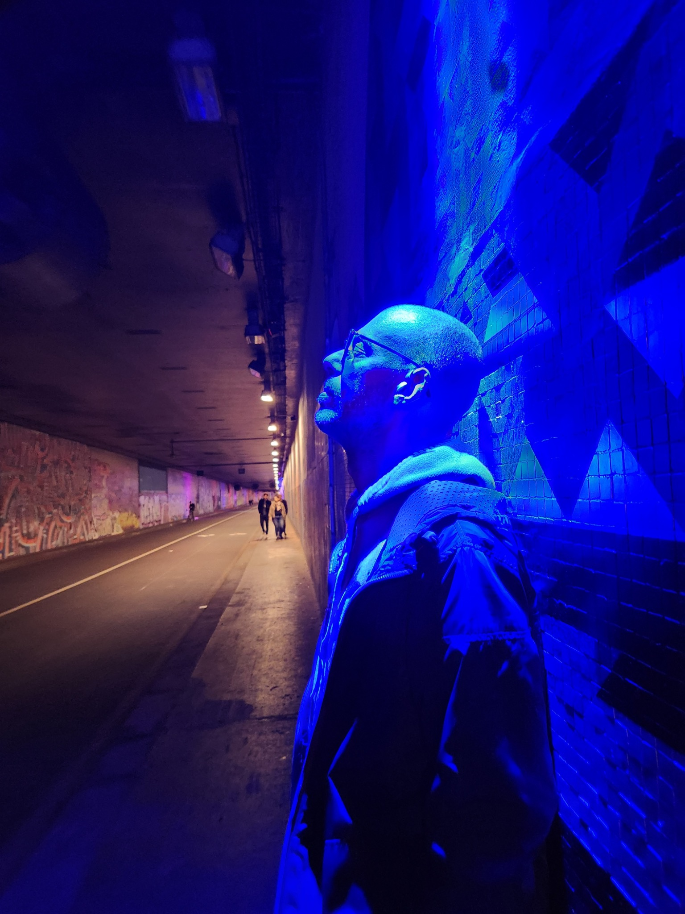

Looming Lines
for singing pianist (or voice and piano) · 7–10 min.
Commissioned by SooJin Anjou for the SPARK series.
Premiere: 3 November 2026, Berlin.

Dmitri Kourliandski, born in Moscow in 1976, studied composition at the Moscow Conservatory with Leonid Bobylev. Since 2022 he has lived and worked in France.
His music has been performed internationally by leading ensembles, orchestras and soloists. He is the recipient of the Gaudeamus Prize, the Gianni Bergamo Classical Music Award, the Johann Joseph Fux competition prize and the Franco Abbiati Prize, among others.
In 2008 he was artist-in-residence of the Berliner Künstlerprogramm. In 2025–26 he was a Fellow of the Wissenschaftskolleg zu Berlin. He regularly gives lectures, workshops and masterclasses internationally.
In works ranging from chamber and orchestral music to opera, electronics and installations, Kourliandski develops the idea of “objective music”: music understood not primarily as narrative, but as an object, spatial situation or environment in which listening itself becomes a form of creative practice. FULL BIOGRAPHY →
His works are published by Donemus and Éditions Jobert / Henry Lemoine.
Commissioned by SooJin Anjou for the SPARK series.
Premiere: 3 November 2026, Berlin.
Commissioned by the Ernst von Siemens Music Foundation for Trio Æther.
Premiere: 6 December 2026, Sonus Novus concert series, Munich.
Commissioned by Radio France.
To be broadcast in 2027 as part of Radio France’s Alla Breve series — Ensemble Multilatérale.
Commissioned by Milano Musica.
Premiere: 5 May 2027, Milano Musica, Milan — Anna D’Errico, piano.
Produced by STOPera.
Premiere planned for the 2027/28 season. More information to follow.